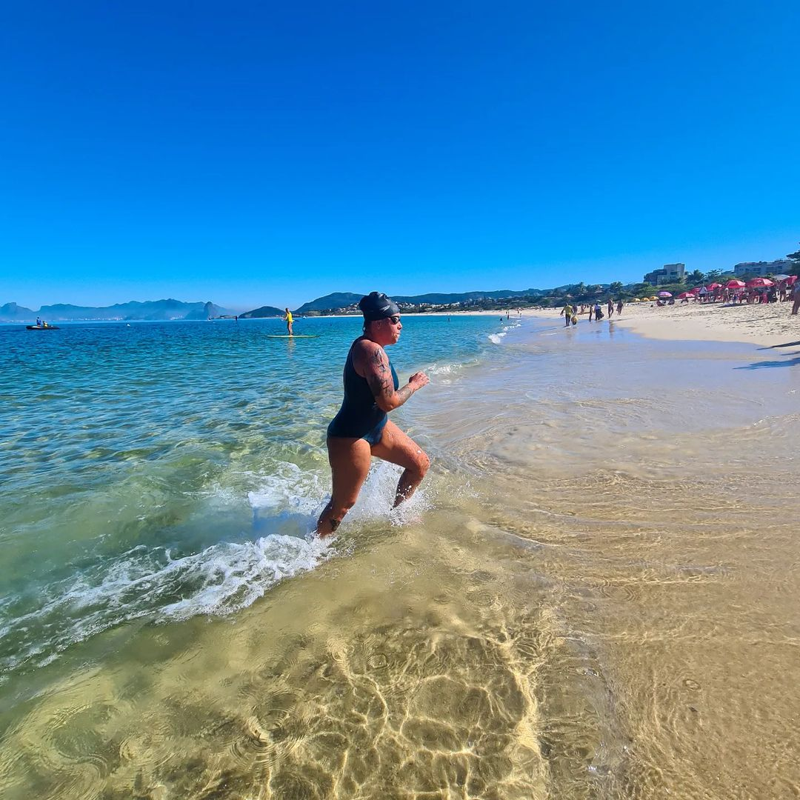
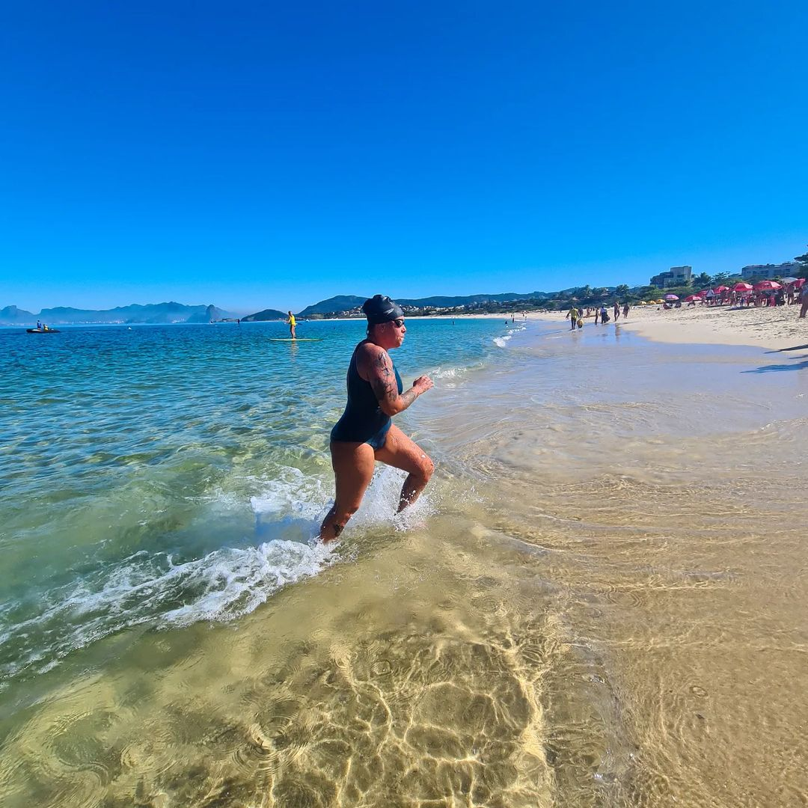

Equipe de Natação
Superando limites a cada braçada.

Venha Nadar Conosco
Inscrições abertas para a nova temporada.
Sobre os Bagres
Os Bagres Swim Team é uma equipe independente de natação em águas abertas criada em Maricá em 2022. Formado por atletas de todas as idades e níveis, o time nasceu do desejo de tornar a natação acessível a todos — seja como caminho para o esporte de alto rendimento ou como ferramenta de saúde e transformação pessoal.
Com treinos regulares, apoio entre os atletas e foco no coletivo, Os Bagres se tornaram referência local, conquistando pódios e formando histórias reais de superação.
Plano de Ação
- 🏊 Preparação física e técnica dos atletas;
- 🌊 Aulas introdutórias para novos praticantes;
- 🏃 Realização de treinos de solo;
- 🤝 Ações sociais e educativas com a comunidade.
 



Nossas Conquistas
Histórico de superação em grandes eventos de águas abertas.
Rei e Rainha do Mar
Rainhas do Mar 2024
Uma das maiores celebrações das águas abertas no Brasil, onde nossos Bagres marcam presença constante no pódio.

Rei e Rainha do Mar
Uma das maiores celebrações das águas abertas no Brasil, onde nossos Bagres marcam presença constante no pódio.
Life Guard 220
Etapa Itaipu
Uma das maiores celebrações das águas abertas no Brasil, onde nossos Bagres marcam presença constante no pódio.
Etapa Camboinhas
Desafios de resistência onde a técnica e a união da equipe fazem toda a diferença em cada braçada.
Hero Swim
Hero Swim
Uma das maiores celebrações das águas abertas no Brasil, onde nossos Bagres marcam presença constante no pódio.
Hero Swim
Desafios de resistência onde a técnica e a união da equipe fazem toda a diferença em cada braçada.

Circuito Aqua
Nossa casa! Provas locais onde fortalecemos a natação na nossa região e incentivamos novos atletas.